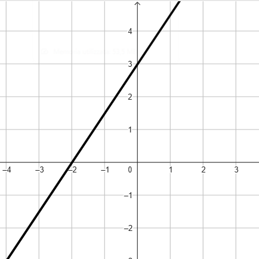

Compiti per casa
Di seguito trovate cinque esercizi riassuntivi di quello che abbiamo fatto finora ed i riferimenti alle schede di esercizi passate suddivise per argomenti.
Svolgete tutti gli esercizi in modo da presentarmi eventuali dubbi in classe.
Punto appartente ad una retta / retta passante per un punto
Esercizio 1
Consideriamo i punti \(A\), \(B\), \(C\), \(D\) rappresentati in figura.
Stabilire se le coordinate di tali punti soddisfano l'equazione
\[
y = 2x + 5
\]
.png) Esercizio 2
Esercizio 2
Consideriamo la retta \(r\) di equazione
\[
y = 3x + 1
\]
ed i punti
\[
A\left(1\,;\,\,4\right) \qquad B\left(-1\,;\,\,-5\right)
\]
Stabilire se la retta \(r\) passa per i punti \(A\) e \(B\).
Equazione della retta
Esercizio 3
Determinare l'equazione associata alla seguente retta

Esercizio 4
Determinare l'equazione della retta passante per i punti
\[
A\left(\dfrac{2}{3}\,;\,\,-2\right) \qquad B\left(\dfrac{5}{3}\,;\,\,1\right)
\]
Distanza tra due punti
Esercizio 5
Stabilire la distanza tra i punti
\[
\left(-2\,;\,\,3\right) \qquad \left(8\,;\,\,2\right)
\]